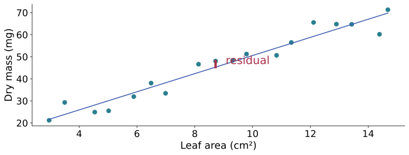
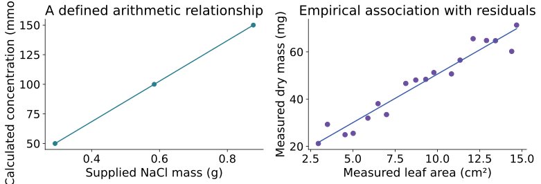
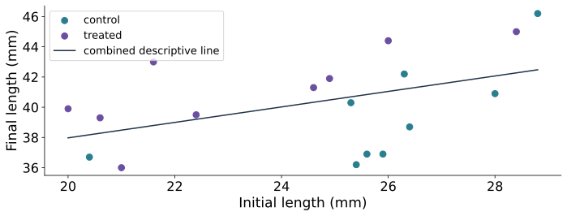
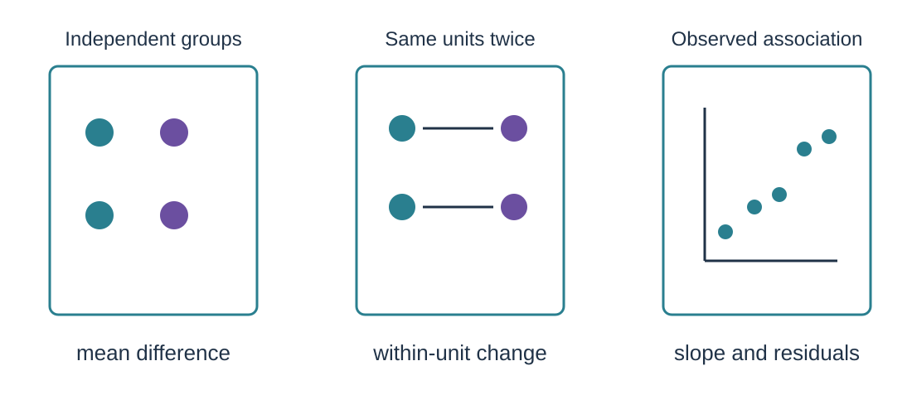

A residual is attached to a particular measured leaf

One leaf observation and its fitted value are connected by its vertical residual.
Residual = observed mass − fitted mass, in mg.
Influence is a question, not an exclusion rule
Keep the full-data fit as primary. Fit without A18 in a separate object and compare.
Ask what changed and why; keep valid observations in the main fit.
A defined formula and an empirical relationship differ

Calculated solution concentrations fall on a prescribed arithmetic relationship;measuredleaf values vary around an empiricalfit.
A perfect relationship created by a formula is not experimental validation.
A new association retains its study context

Initial and final transferseedling lengths are plotted with allocationcolour and one descriptive combined line.
This asks about starting and final size, not the mean treatment effect on growth.
Fit the question you actually stated
transfer <-read_csv('data/seedlings-transfer.csv',show_col_types =FALSE)size_fit <-lm(final_mm ~ initial_mm, data = transfer)coef(size_fit)range(transfer$initial_mm)
Use an in-range initial length for a worked fitted-value calculation.
Choose the analysis through the design and outcome

Independentgroups,paired measurements,and an observed scatter pattern lead to different familiaranalysisquestions.
Mean difference, within-unit change, and a slope answer different questions.
Finish with a comparison sheet you can reuse
For each familiar question, record:
Independent units and what was measured.
Outcome, units, and the method/output.
A design or interpretation limitation.
Keep source, data, figure, and report together.
Exercises: explain the line, the residuals, and one limit
Create association-report.Rmd with observations, fitted line, slope units, and residuals.
Keep the full-data result and label any sensitivity check.